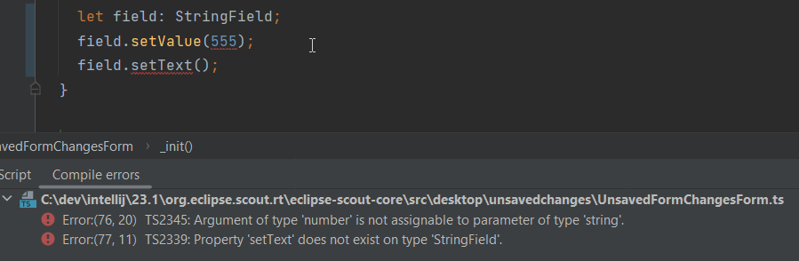

Eclipse Scout Release Notes
About This Release
The latest version of this release is: 23.1.8.
You can see the detailed change log on GitHub.
Coming from an older Scout version? Check out the Eclipse Scout Migration Guide for instructions on how to obtain the new version and upgrade existing applications.
Demo Applications
The demo applications for this version can be found on the features/version/23.1.8 branch of our docs repository on GitHub.
If you just want to play around with them without looking at the source code, you can always use the deployed versions:
Re-license from EPL-1.0 to EPL-2.0
Scout has changed its license from the deprecated EPL-1.0 license to EPL-2.0. Usually this has no impact for your project. For details please consult the EPL FAQ in particular the section with the major changes.
Improved Developer Experience for Scout JS
Scout 23.1 contains many improvements for Scout JS developers. The goal was to make the development easier, more efficient and more fun. Please read the following chapters to learn how we did it.
TypeScript Support
One major addition in this release is TypeScript support.
-
We migrated the complete Scout JS code base to TypeScript. This means the Scout API is now fully typed.
-
We enhanced the JS build, so you can write TypeScript yourself in your project.
This gives you many benefits:
-
More efficient development
Typing allows your IDE to better assist with code completion during development and to only suggest methods and properties for an object that actually exist. Figure 1. Better Code Completion
Figure 1. Better Code Completion -
Easier entry
With better code completion and clear method signatures, a not-so-experienced JavaScript developer can more easily get up to speed and understand the relationships in the code. -
More confidence when updating
If a used API has changed, the code turns red and the build fails. -
More confidence during development
Incorrect use of an API or code in general is detected at an early stage. The developer gets more confidence that his code will work.Figure 2. Compile Errors
Well-Defined and Typed Widget Models
Widgets can be configured in many ways using the available properties.
Until now, it was not obvious which properties were available and what they do.
To improve that, every widget now comes with a well-defined model which contains all available properties including a description.
The model is a TypeScript interface and named after the widget with the suffix Model.
For example, you will find the model of a Menu under the name MenuModel.

The models can not only be used for documentation purposes, TypeScript and Scout SDK use them as well for code completion and type checks.

Well-Defined and Typed Widget Events
Most of the widgets can trigger events that can be used to react to user interactions.
Until now, it was not obvious which events were available.
To improve that, every widget now comes with a well-defined event map which contains all available events.
The event map is a TypeScript interface and named after the widget with the suffix EventMap.
For example, you will find the event map of a Menu under the name MenuEventMap.
These event maps are used by TypeScript to provide code completion for the event name when adding an event handler:
You also get the correct type of the event itself including its members in the handler:
Typed Return Values When Finding Widgets
Retrieving a widget is typically done by using this.widget('id').
The result of that function is a generic Widget, so it is not possible to call a method of a specific widget without casting (at least with TypeScript).
To do the type casting, you can either specify the return type directly at the time of usage.
import {Menu} from '@eclipse-scout/core';
let menu = this.widget('YourId', Menu);import {Menu} from '@eclipse-scout/core';
let menu = this.widget('YourId') as Menu;Or you can use widget maps. A widget map is an interface that maps the ids of the widgets to their type. This allows TypeScript to determine the return type automatically.

widget functionScout SDK takes care of creating the widget maps, so you don’t have to write them manually.
ObjectType as Class Reference
It is now possible to use a class reference as objectType.
An objectType is typically used when creating a new object using scout.create(objectType) or when defining a model.
Using a class reference instead of a string will make the development easier because the IDE knows about the actual type and can provide
code completion and other assistance.
It may even improve the tree shaking process of the bundler (webpack).
Because using a class reference requires an import, the bundler automatically includes the imported module.
So,
scout.create('Button', {parent: this});becomes this:
import {Button} from '@eclipse-scout/core';
scout.create(Button, {parent: this});And this
export default () => ({
objectType: 'Form',
rootGroupBox: {
objectType: 'GroupBox'
}
});becomes this:
import {Form, GroupBox} from '@eclipse-scout/core';
export default () => ({
objectType: Form,
rootGroupBox: {
objectType: GroupBox
}
});Please see the Migration Guide for migration assistance.
MenuTypes
Constants
Constants have been added for all menu types of
-
Calendar
-
ImageField
-
Planner
-
TabBox
-
Table
-
Tree
-
ValueField
Instead of using string literals in e.g. a MenuModel one can use these constants now. Therefore, this
import {Menu} from '@eclipse-scout/core';
{
id: 'ExampleMenu',
text: 'Example',
objectType: Menu,
menuTypes: [
'Table.SingleSelection'
]
}becomes this:
import {Menu, Table} from '@eclipse-scout/core';
{
id: 'ExampleMenu',
text: 'Example',
objectType: Menu,
menuTypes: [
Table.MenuTypes.SingleSelection
]
}Menu type support for ValueField and ImageField
Menu type support has been added to the ValueField and the ImageField.
This means that e.g. the ValueField will display different menus whether a value is set or not.
For more information about the menuType support of ValueField and ImageField see Menu Types.
JavaScript Code Migration Tool
It is normal that code changes from time to time even on a larger scale. Since code migration is often a tedious task, any automation is welcome.
With this release there are several code migration tasks, which are mostly optional, but recommended. That is why we tried to automate as much as possible and created a tool you can use as well.
The main purpose of the tool is to migrate your JavaScript code to TypeScript, but other migration tasks make use of the tool as well. Instructions for these tasks can be found in the Eclipse Scout Migration Guide.
If you would like to migrate your existing code to TypeScript, the migration tool will certainly help you. But be aware, that the majority of the work, which is adding types, will need to be done manually.
Migrating to TypeScript is not required, you can still use JavaScript or write only new code with TypeScript. However, if you are a library developer, we recommend migrating to TypeScript to make the usage of the library easier.
Detailed instruction for the migration can be found here: @eclipse-scout/migrate
If you plan to use TypeScript for new code without migrating your existing code base, you just need to add a tsconfig.json like described here: @eclipse-scout/tsconfig
JavaScript Build Improvements
Library Build
If code is written with TypeScript, it needs to be transpiled to JavaScript before it can be used. Because this task takes some time, it should not be done by the project using a TypeScript library but by the library itself. This is true for Scout as well. Therefore, Scout 23.1 is shipped with prebuilt JavaScript code.
To make sure your build uses the prebuilt version, your import statements need to be correct. Please have a look at the migration guide for details: Migration Guide.
If you are a library developer, you should consider doing the same. To do so, you can use the support provided by Scout’s build tooling as described here: Authoring Libraries.
Faster and more Efficient Minification
The Scout build now uses ESBuild for the minification process. This reduces the duration and memory consumption of the production build a lot, which is especially beneficial if your build runs in a cloud environment with limited hardware.
TypeScript Build
As already mentioned in TypeScript Support, you can now use TypeScript for your Scout JS project or when writing custom widgets for Scout Classic.
All you have to do is to create a tsconfig.json that extends from the default configuration provided by Scout as explained here: @eclipse-scout/tsconfig
The Scout build will transpile all files ending with *.ts and will start a separate process to check if the types are correct.
That way you will not be blocked by the type checking, but you will still be informed if some types are wrong.
ESLint for TypeScript
We added linting support for TypeScript files.
If you are already using Scout’s eslint module (@eclipse-scout/eslint), you’ll get the linting automatically.
Typed NodeId for Node Identifier
In previous versions several ways were used to create/use a node identfier (e.g. to identify a specific client/backend server):
-
A typed class NodeId existed, the current identifier was accessed using
org.eclipse.scout.rt.dataobject.id.NodeId.current() -
Node identifiers could be accessed as String using
org.eclipse.scout.rt.platform.context.NodeIdentifier.get() -
And another node identifier (default implementation random UUID) could be accessed using
org.eclipse.scout.rt.shared.INode#ID
As of version 23.1 the typed org.eclipse.scout.rt.dataobject.id.NodeId is used wherever possible, the application scoped bean org.eclipse.scout.rt.platform.context.NodeIdentifier is still used for the computation of this typed NodeId. The get() method returning a String has been deprecated, the interface org.eclipse.scout.rt.shared.INode has been removed.
IId Interface, new IRootId and ICompositeId
In previous versions the IId interface was typed with a generic WRAPPED_TYPE extends Comparable<WRAPPED_TYPE>.
To be able to use the IId interface as general root for any kind of identifiers without having to deal with a concrete generic type, the generic type definition was removed and moved to the default implementation AbstractRootId and the typed sub-interfaces IUuid, IStringId and ILongId.
As new feature IIds may consist of multiple wrapped components (e.g. composite ids). Use ICompositeId and AbstractCompositeId as base to build own composite types.
Based on the adapted serialization mechanism (see IdFactory and IdCodec` classes) composite ids may also be used in data objects and REST APIs like the existing root ids.
@IdTypeName("example.ExampleCompositeId")
public final class ExampleCompositeId extends AbstractCompositeId {
private static final long serialVersionUID = 1L;
private ExampleCompositeId(ExampleStringId c1, ExampleUuId c2) {
super(c1, c2);
}
@RawTypes
public static ExampleCompositeId of(String c1, UUID c2) {
if (StringUtility.isNullOrEmpty(c1) || c2 == null) {
return null;
}
return new ExampleCompositeId(ExampleStringId.of(c1), ExampleUuId.of(c2));
}
public static ExampleCompositeId of(ExampleStringId c1, ExampleUuId c2) {
if (c1 == null || c2 == null) {
return null;
}
return new ExampleCompositeId(c1, c2);
}
}New Calendar Tooltip
The calendar component item of the calendar widget has new attributes:
-
subjectIconId - icon is showed in the calendar component in front of the subject
-
subjectLabel - label in tooltip on top of the subject
-
subjectAppLink - appLink in tooltip of calendar component
-
descriptionElements - list of
ICalendarItemDescriptionElementwhich is displayed in the body of the tooltip of the calendar component

Further the calendar provides now a time range selection in the day, work week and week mode. By default, this feature is disabled, it can be configured with the rangeSelectionAllowed property. The start point and end point of the current selected time range can be accessed with the selectedRange property.
Categories for Health Checkers
For the health check servlet org.eclipse.scout.rt.server.commons.healthcheck.AbstractHealthCheckServlet a new query parameter category has been introduced to create the possibility to check only some specific health checkers for a specific category. If a category is supplied using the parameter, the actual IHealthChecker checkers are filtered using the method org.eclipse.scout.rt.server.commons.healthcheck.IHealthChecker.acceptCategory(HealthCheckCategoryId).
If no category is provided there is no change in behavior and all checkers are executed. If an invalid category is provided an error is logged and the same behavior is executed as no category was provided.
API Changes
-
New method
org.eclipse.scout.rt.server.commons.healthcheck.IHealthChecker.acceptCategory(HealthCheckCategoryId)was added, default implementation always returnstrue -
Parameter
HealthCheckCategoryIdwas added fororg.eclipse.scout.rt.server.commons.healthcheck.IHealthChecker.checkHealth(RunContext, HealthCheckCategoryId); if health check itself does not rely on a specific category ignore this parameter -
Parameter
HealthCheckCategoryIdwas added fororg.eclipse.scout.rt.server.commons.healthcheck.AbstractHealthChecker.execCheckHealth(HealthCheckCategoryId); if health check itself does not rely on a specific category ignore this parameter
JsForm
The JsForm is a Java-form that wraps a form implemented in JS. This allows a Scout Classic application to open a Scout JS form. For more information about the JsForm see How to open a Scout JS form in a Scout Classic application.